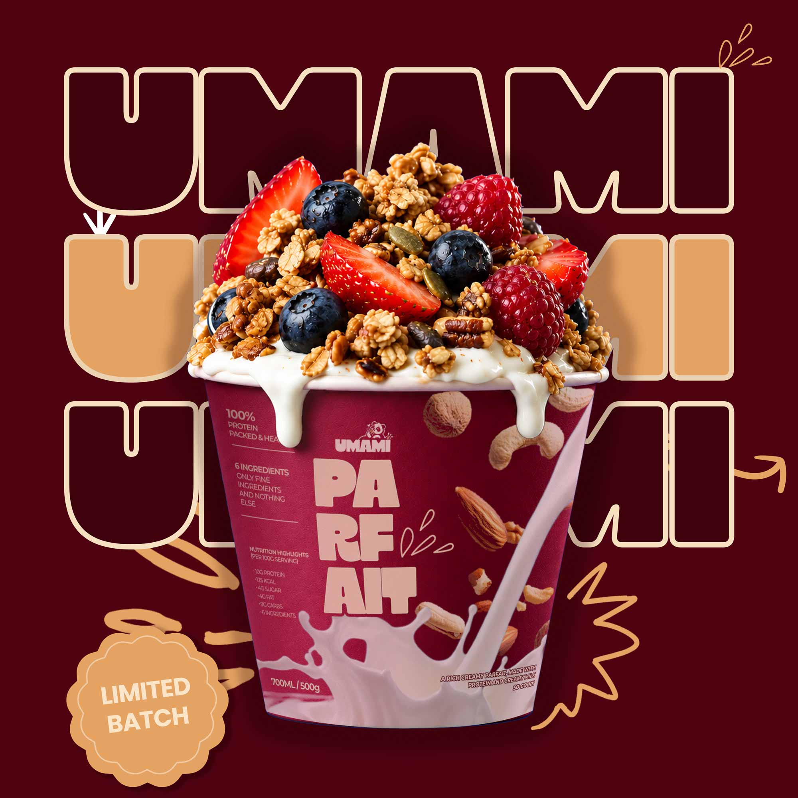
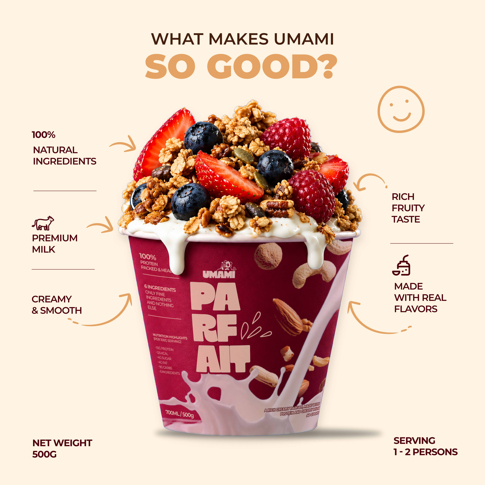
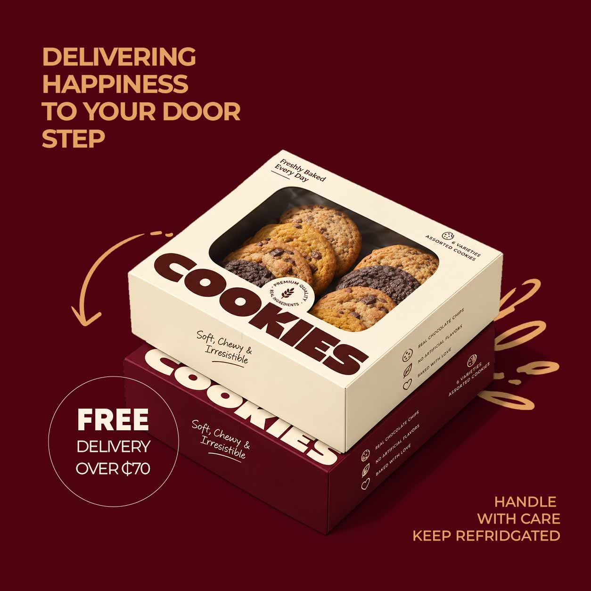

Umami Pastries
Umami is a pastry and parfait brand built around the idea of the "fifth taste": the savory richness that keeps you coming back for another bite. The identity is bold and warm, with a heavy, chunky wordmark, a deep burgundy and caramel palette on cream, and hand-drawn arrows and doodles that give it a homemade feel.

The Hook
Umami. Pastries and parfaits made to be craved.The name comes from the fifth taste, the one that keeps you coming back for one more spoonful. The identity carries that feeling: a bold, stacked wordmark that repeats, fills and outlines itself, and deep burgundy and caramel tones that feel as rich as the product tastes. Swipe to see how the brand comes together.
The Philosophy
Every Umami product starts with a short list of honest ingredients: granola, yogurt, berries and real chocolate. The design follows the same idea: warm cream, heavy burgundy type, and hand-drawn arrows that make it feel personal and homemade.Smooth. Rich. Irresistible
A short list of real ingredients: yogurt, granola, berries, real chocolate. Nothing hidden and nothing artificial. The cup says it plainly: "6 ingredients, only fine ingredients and nothing else." The tone matches the food, with a friendly cookie-munching bear, the tagline "You deserve a little treat," and hand-drawn arrows and doodles that make the brand feel sketched in a kitchen rather than built in a boardroom.
The Packaging
The packaging had to look as good as the cookies taste. A cream box with a window shows off the product, and a burgundy sleeve gives it a bold shelf presence. The oversized "COOKIES" type is the loudest thing on it, because the treat should be.The copy on the box stays warm, with lines like "Soft, Chewy & Irresistible," and the delivery post carries that into the last step: happiness to your door.
Umami is made for the fifth taste, the one that keeps you coming back. Real ingredients, no artificial flavors, and packaging that wears its name loud: stacked type, a signature yogurt drip, and burgundy, caramel and cream throughout. Every cup, and every box, says you deserve a little treat.




